Introduction
Rapid environmental change increases the need for reliable long-horizon geospatial forecasts. Nonlinear dynamics, local spatial dependence, and external drivers make single-architecture solutions hard to trust without controlled comparison.
This project does not introduce a new neural network family. Instead it provides an engineering benchmark that evaluates three complementary paradigms under the same preprocessing, training, and evaluation pipeline:
Model architectures
All models share the same annual raster stack and one-step-ahead pairing (predict year t+1 from year t). They differ only in how local neighborhoods / graphs and temporal dependencies are encoded.
Neighborhood-Augmented LSTM
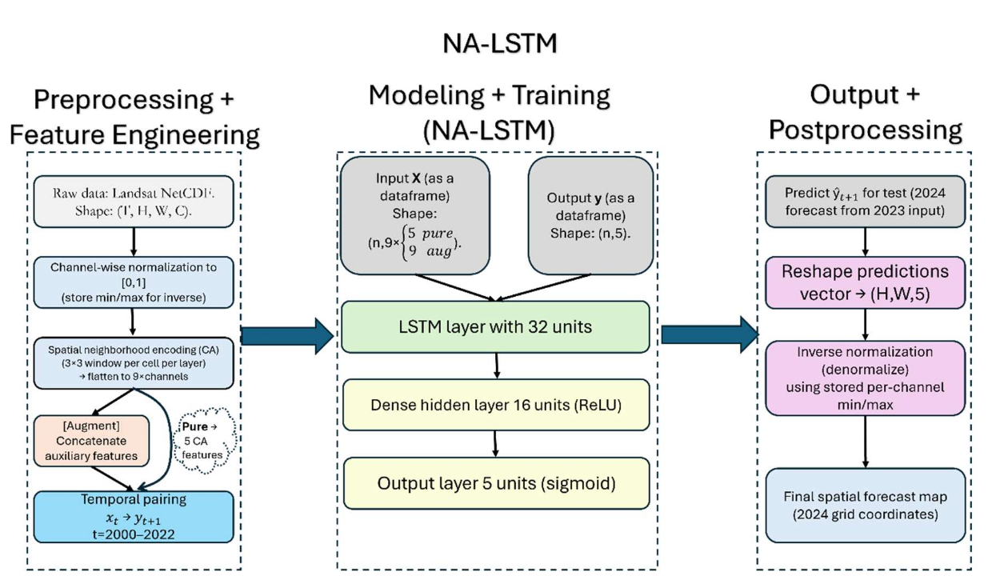

GAT + Temporal Attention
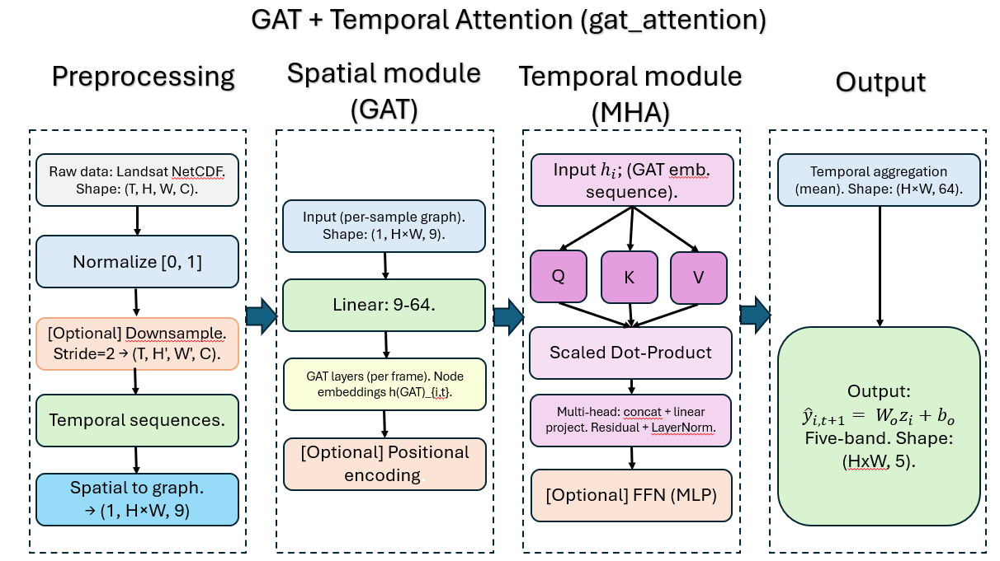
Model mapping overview
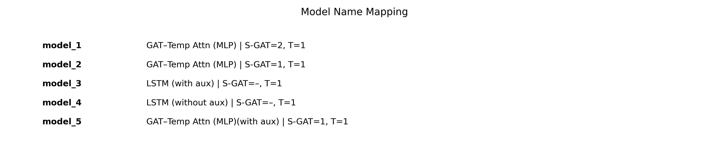
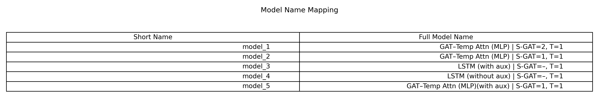
Results (2023 → 2024 holdout)
Performance is reported with global pixel-wise metrics (R², RMSE, MAE, MAPE, correlation) and index-wise breakdowns. Vegetation- and water-related indices were generally more predictable than noisier spectral combinations.
| Model family (representative) | Highlight |
|---|---|
| NA-LSTM + auxiliaries | Best overall accuracy and stability (R² ≈ 0.95) |
| GAT–Temporal Attention + MLP | Second-best overall; stronger relative noise robustness in some stress tests |
| GAT–Temporal Attention without MLP / LSTM–GAT hybrids | Less stable; weaker or negative R² on several indices |
Scatter agreement
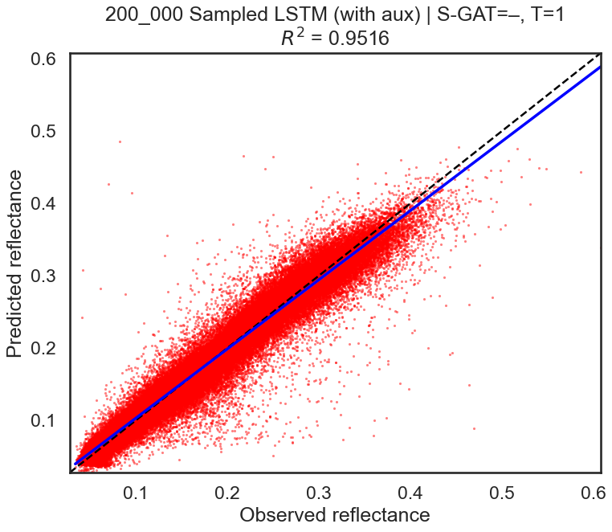
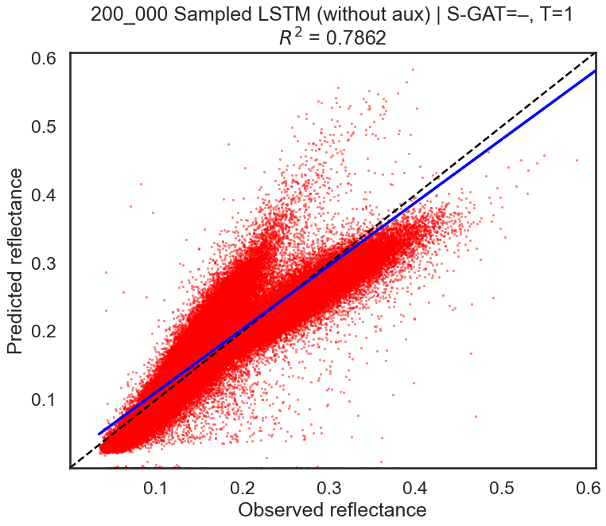
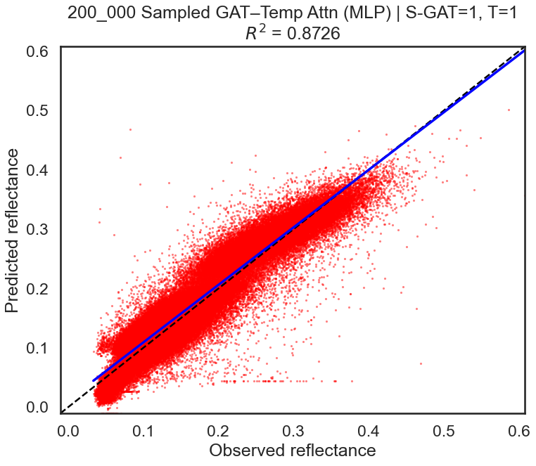
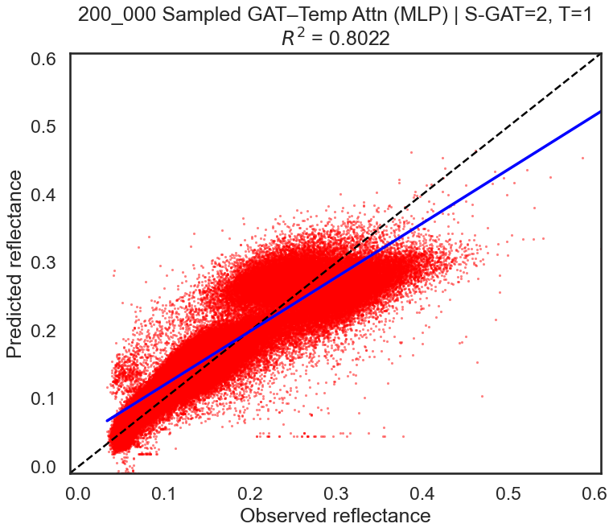
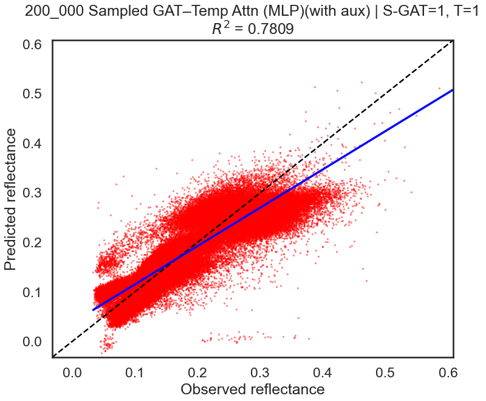
Metric comparison across indices
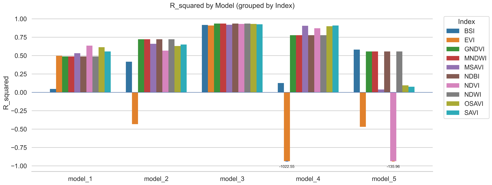
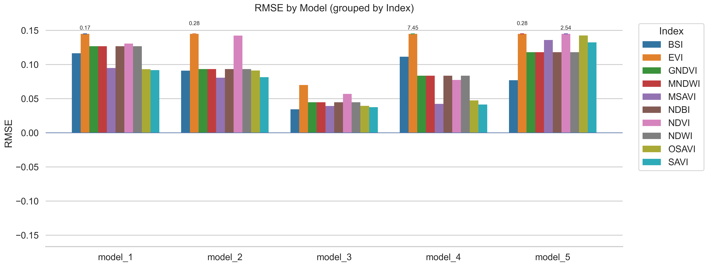
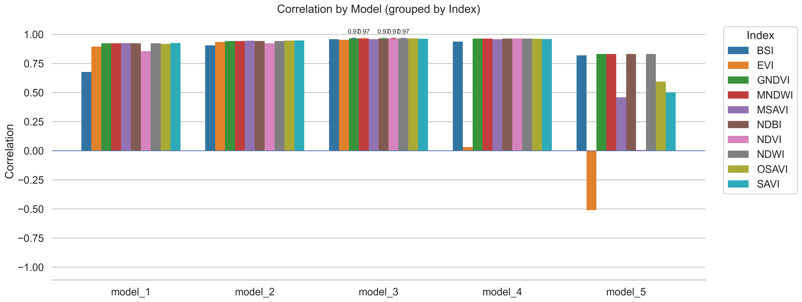
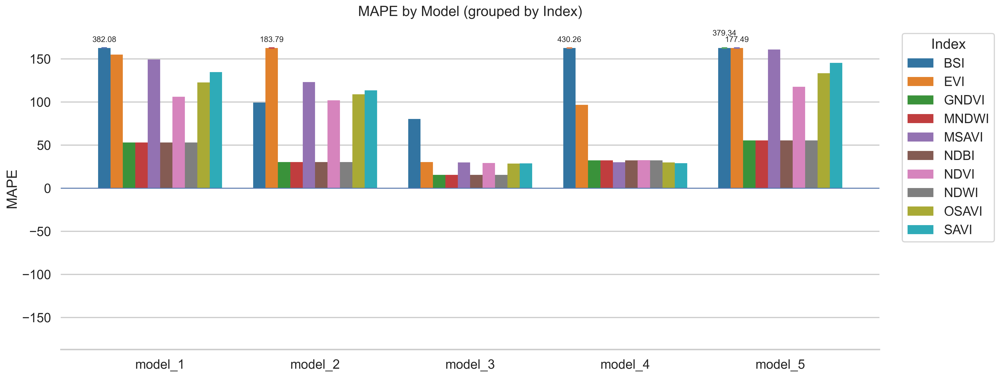
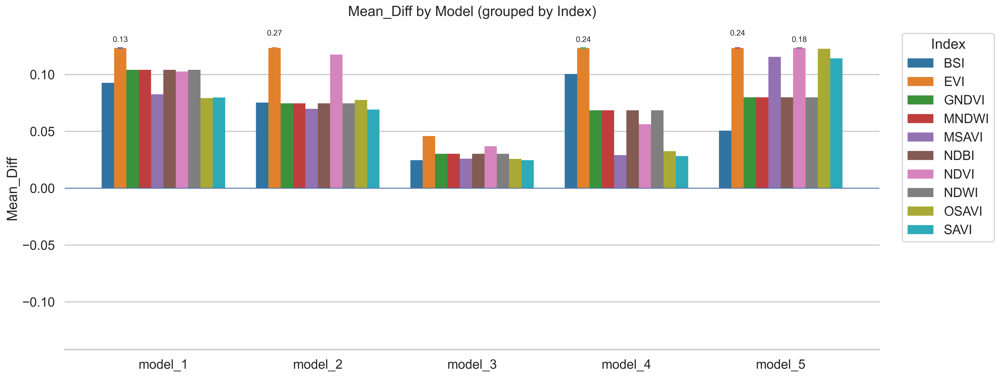
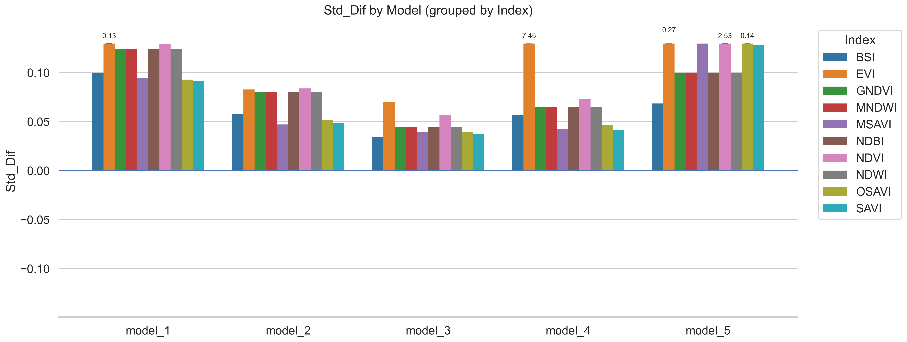
Reproduce
Place annual NetCDF stacks under data/
(landsat20*.nc, optional ndvi20*.nc, plus
dem.nc, slope.nc, road_dis.nc).
pip install -r requirements.txt
# Best paper configuration (NA-LSTM + auxiliaries)
python main.py --model nalstm --use-ndvi --use-static-features --no-downsample
# GAT–Temporal Attention with MLP / FFN
python main.py --model gattemporalattention --use-feed-forward --use-ndvi --use-static-features
# Optional noise robustness analysis
python uncertainty.py --model gattemporalattention \
--checkpoint-path checkpoints/your_model.pth \
--perturbation-mode noise --use-feed-forwardFull CLI details and citation instructions live in the repository README.
Citation
Please cite the Scientific Reports article when using this code or reporting results:
@article{Karimadini2026SpatioTemporal,
author = {Karimadini, Kaveh and Pourebrahim, Sharareh},
title = {Simulation of long-term spatio-temporal environmental dynamics using a unified benchmark of neighbor augmenting, LSTM and graph attention models},
journal = {Scientific Reports},
year = {2026},
doi = {10.1038/s41598-026-56762-5},
url = {https://doi.org/10.1038/s41598-026-56762-5}
}Software license: MIT. Article license: CC BY-NC-ND 4.0.